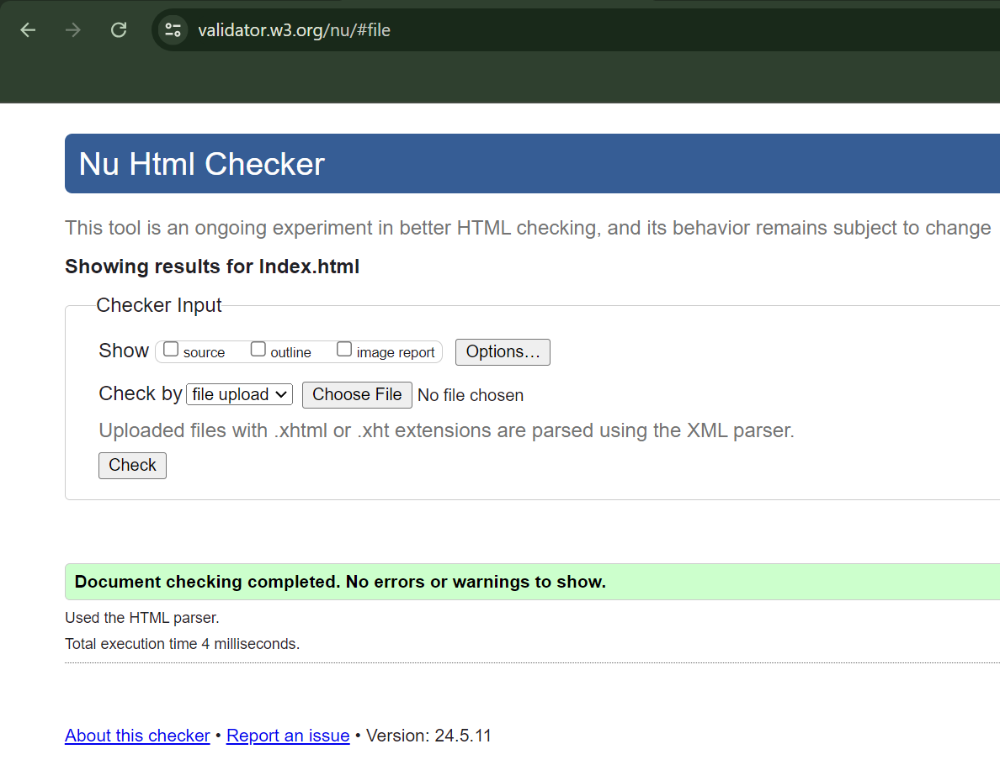
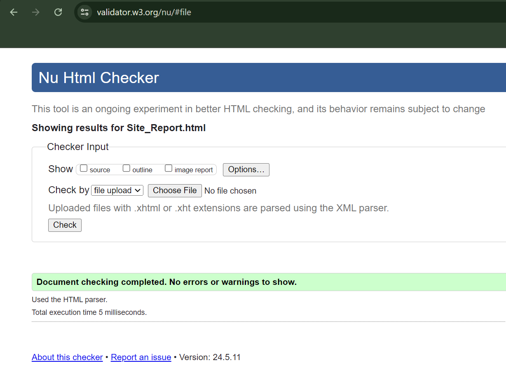
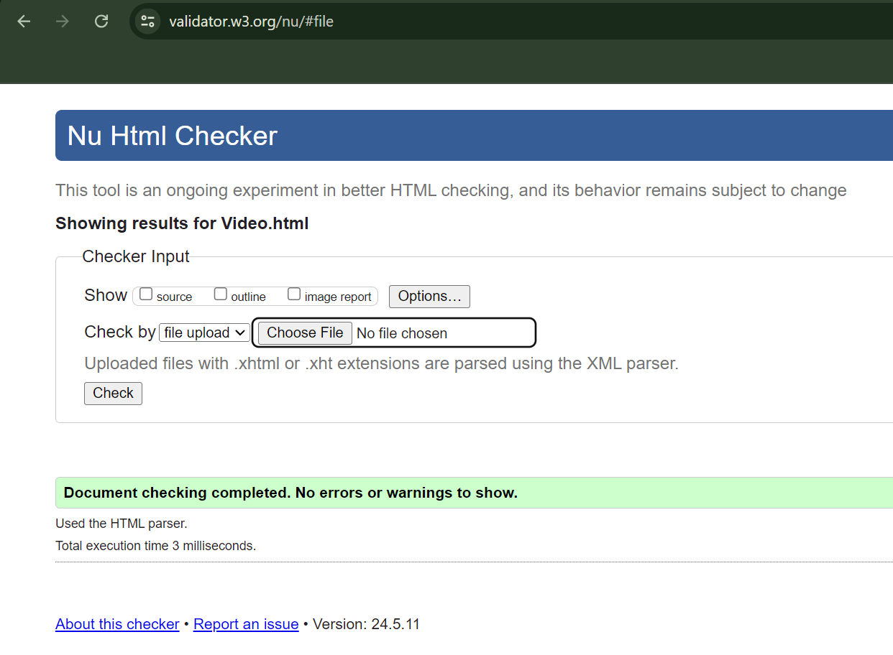

I began by learning the basics of HTML and CSS. Understanding the initial structure of HTML and the functions of each tag was simple. Making a simple webpage with headings, paragraphs, links, and images gave me a solid foundation, so it felt nice to do that. With CSS, I was able to give my HTML elements a creative flair. Learning about selectors, attributes, and values and how they interact to create a site was rewarding and pleasurable.
One of the first hurdles was to understand the CSS box model. It took some effort to understand how margins, paddings and borders interact to determine the placement of the pieces. I've often noticed that I'm fiddling with various parameters to see how it looks visually. Another challenge was to grasp the knack of responsive design. The first time I learned about media queries and flexible grid layouts was to make my web pages appear well on different screens and devices. Nevertheless, it took time to make these ideas effective.
Another learning lesson was the creation of a user interface. I have a deeper understanding of the value of user experience (UX) and sound design principles. It was necessary to balance functionality and beauty. To create a design that is aesthetically beautiful and easy to use, I tried various color schemes, typefaces and layout strategies.
This journey was not without ups and downs. After hours of tinkering, it was incredibly satisfying when everything finally worked correctly. On the other hand, there were moments when I was frustrated looking like nothing worked. But every obstacle I overcame has increased my confidence and skill set.
The experience of learning web programming has been fulfilling. It helped me understand the value of tenacity, the approach to problem solving, and the satisfaction that comes from starting something from scratch. As I continue to learn and grow, I look forward to building more complex and innovative web projects.
Click Herefor Project 1 Image Reference
Click Herefor Project 2 Image Reference
Click Herefor Project 3 Image Reference
Click Herefor Font Family Reference
Click Herefor Facebook Icon Reference
Click Herefor Instagram Icon Reference
Click Herefor Linked In Icon Reference
Index Page Validation
Project Page Validation
Site Report Page Validation
Contact Page Validation
Video Page Validation
